~3 Circles~
7/14/2025
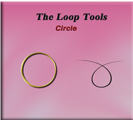
What is the Circle Tool?
The Circle tool is also found within the Loop Tools. This tool enables you to transform a selected loop of edges, or vertices into a circular shape. You would be able to gain access to this tool by bringing your object into Edit mode. Then you can right click on it and access the Loop tools.
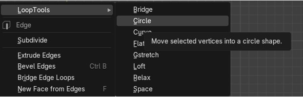Remember, you can only get to the Loop tools if you first enable it in the Edit Menus, Preference option.
How to Turn on Loop Tools
You will want to go to:
Edit-Preferences- Add-ons then just enable Loop Tools.
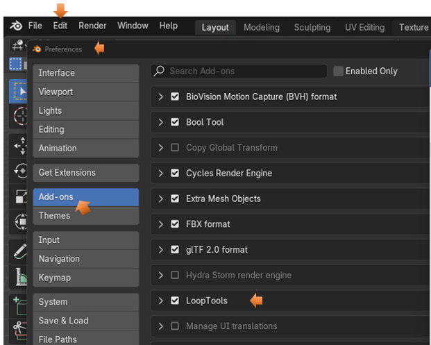Now you can reach the Loop tools by right clicking on the object in Edit mode. It should be the first listed item in the context menu that pops up, it then has a submenu for tool options.
In this particular example, we will only be using one object, so there is not need to join two objects together before entering the Edit mode with it.
How to use the Circle Tool?
Start by bringing the basic cube into Edit mode.
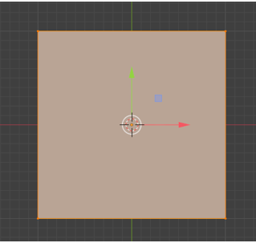Sub Divide the Cube
In order for this circle thing to work, you will first need to sub divide your cube. The original cube doesn’t have enough geometry to pull this off.
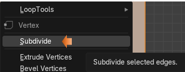
Change the Number of Cuts
We want to change the number of cuts to around 10.
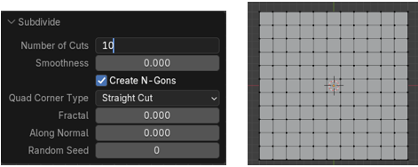I want to make this circle on the top of my cube. So, hit 7 on the numpad to go to top view.
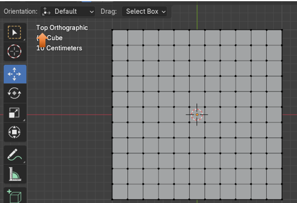Now we want to select the edges that we want to use to make the circle in the mesh.
Go to Edge mode
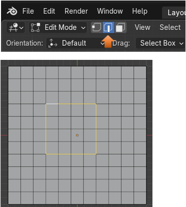Now Right - Click choose the Loop Tools, and then select Circle, which is the second option inside of the Loop gadgets.
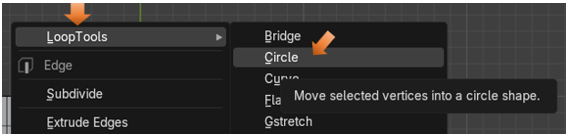This is what the circle looks like in the mesh now.
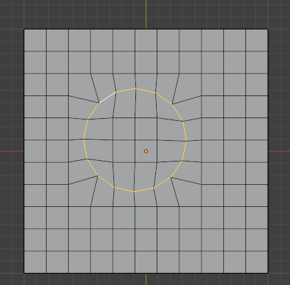The Influence Option
If you go to the dialog box at the bottom, you will find that one of the options that we are able to use is Influence. This slider will help us to change how circular that you actually want the hole to be. You can move it to the far left and it will look as if you did not do anything at all. If you slide it to about half way, you will have rounded corners, but then if you slide it all the way to the right, then you have a circle.
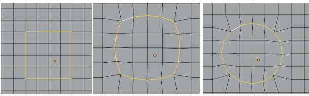Simple Real World Example
Now we can do something like this.
Hit the 1 on the numpad to go to front view. And use the Move tool to pull up on this circle.
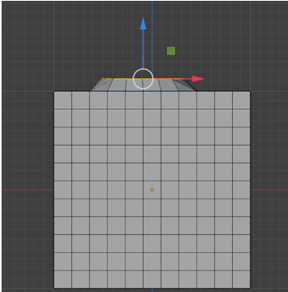Ok, so this middle part is dipped in, maybe you want this and maybe not.
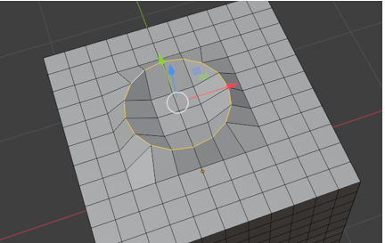Turn on the proportional editing tool
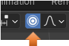Now either select the center vertex or the 4 faces in the center of the dip. And then slowly pull upward to flatten this section out. Remember, if you want to select more or less area use the middle mouse wheel, but only after you start your movement with the proportional tool, or Blender will just think that you want to zoom the viewport in and out.
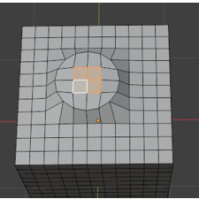So, you can start to see where you can start to use this circle tool to do some modeling.
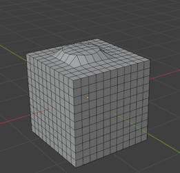Creating a Hole
Look at this. We can even add our own hole, but deleting a few faces.
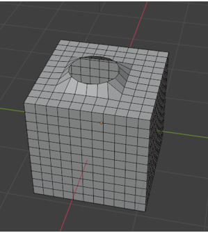So, that’s it for the circle tool. If you were to try to do this without the tool, you would more than likely struggle, but with the tool, we can do things with a simple click of the mouse.